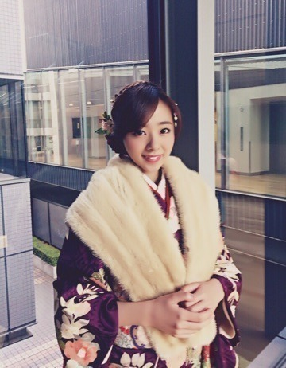
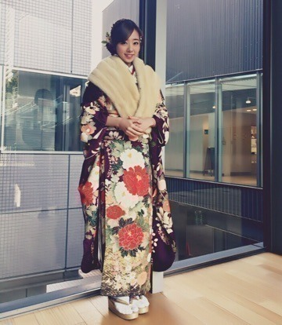
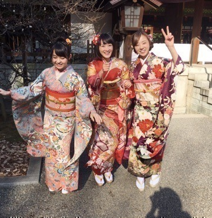
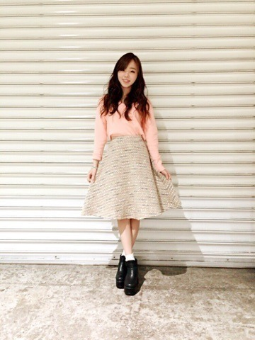

| 2016/01 15 Fri | 川村真洋 ～不思議な3人～ |
こんにちわ♡
川村まひろです.＊
最近寒いけど皆さん体調は大丈夫ですかぁ♡？ 私は...元気ですけど咳が止まらないやつですね（ ; ; ）ノ 頑張ってなおしますね.＊
そしてそして最近の事を書いていきたいと思います。先ずは、、、振袖っ♡♡♡
あっぷ

全身♡

どうですかねっ？...
似合ってますかね（ ; ; ）？
1月8日に乃木神社で成人式がありました♡ 今年の成人組は、私，生駒，万理華の3人ですね...^ ^
握手会の日に3人で成人の挨拶もありました！
自分たちでも自覚しているし，周りにも言われること...言いますね？？
個性ばらばら
自分を持っていていい意味で頑固，
ファッションが大好き，
パフォーマンスが大好き。。
何だかまとまりのない3人だけど，3人とも魅せることが好き♡♡♡
囲み取材などでも沢山インタビューあったんですが，今年の目標を言いますと...
10代の若さを忘れない！
毎日楽しくポジティブに生きる♡
もっともっと沢山歌が歌いたいな...♡
ファッションのお仕事がしたい！！！！
ですかね(#^.^#)ノ
まぁ、こんな感じですかね...
他にも色々あるんだけど全部話してたら明日の朝までかかりそうなので、、( ´ ▽ ` )ﾉぁはは

そしてそして，9日は幕張メッセにて個別握手会がありました♡♡♡
初めましての方が沢山...(T ^ T)ノ
嬉しかったよぉ～。
ありがとうございました！！！
今回のまに私服は。。。

ピンクのセーターにベージュのスカート♡
見づらいね？
このスカート可愛いんだよ？
セーターと同じ色のピンクとブルーの柄が入っていて，全体にゴールドのラメが入ってるの♡
本当はこのファッションだと，ヒールの方が綺麗で合うんだけど，楽を選んでしまいました^ ^ぇへへ 黒のショートブーツはいちゃったや♡
でも珍しく白のふわふわの靴下はいてるんだよ？ 可愛いファッションも綺麗なファッションもかっこいいファッションも色んな洋服が似合う人になりたいな...(#^.^#)♡
そしてラストにっ...
先日「乃木坂工事中」でHYさんの366日を歌わせて頂きました.＊
と言うか突然すぎるカラオケバトルだったんですけどねっ、、笑笑
本当にびっくりましたよ！笑
朝一だし，声出しも何もしていない状態で，いきなり歌う。ってのは初めての経験でしたね...。笑
いきなり過ぎて，選曲も迷いましたし...♡
でも366日は誰もが知ってる曲だし，ちょうど私たち世代の歌なので丁度ぃいかなと思って(#^.^#)
本当に全然思う様に歌えなくて不安で告知もできませんでした...。ごめんなさいm(._.)m
なのにOA後，沢山の方から暖かいメッセージが寄せられていて本当にホッとしましたし，嬉しかったです...♡ 皆本当にありがとう（＾_＾）
成人式の日大阪に帰りました！！
次のblogに書きます（＾_＾）
ではでは，またね♡♡♡ノ
川村まひろ...